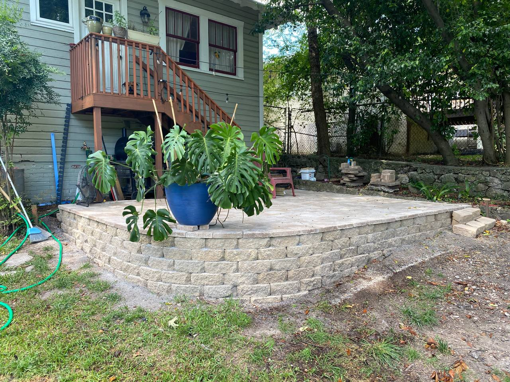
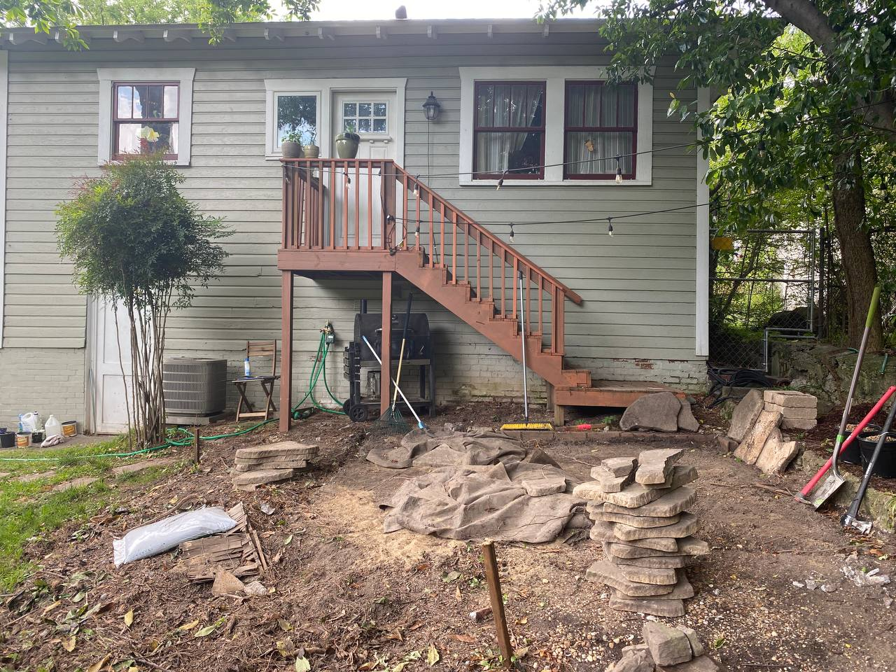
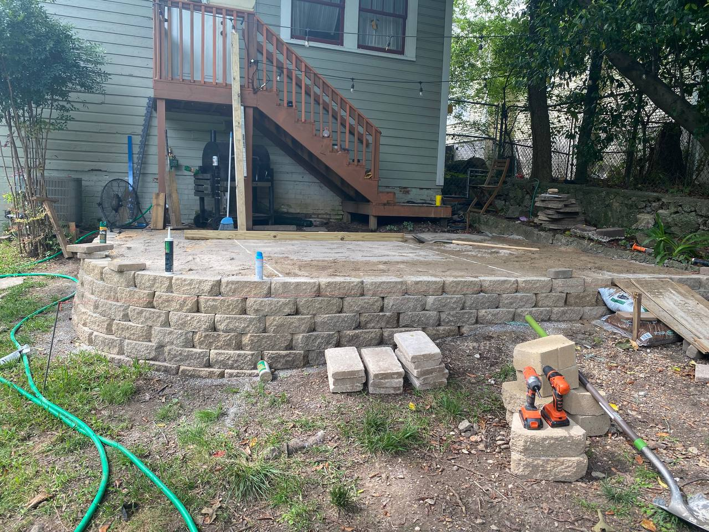
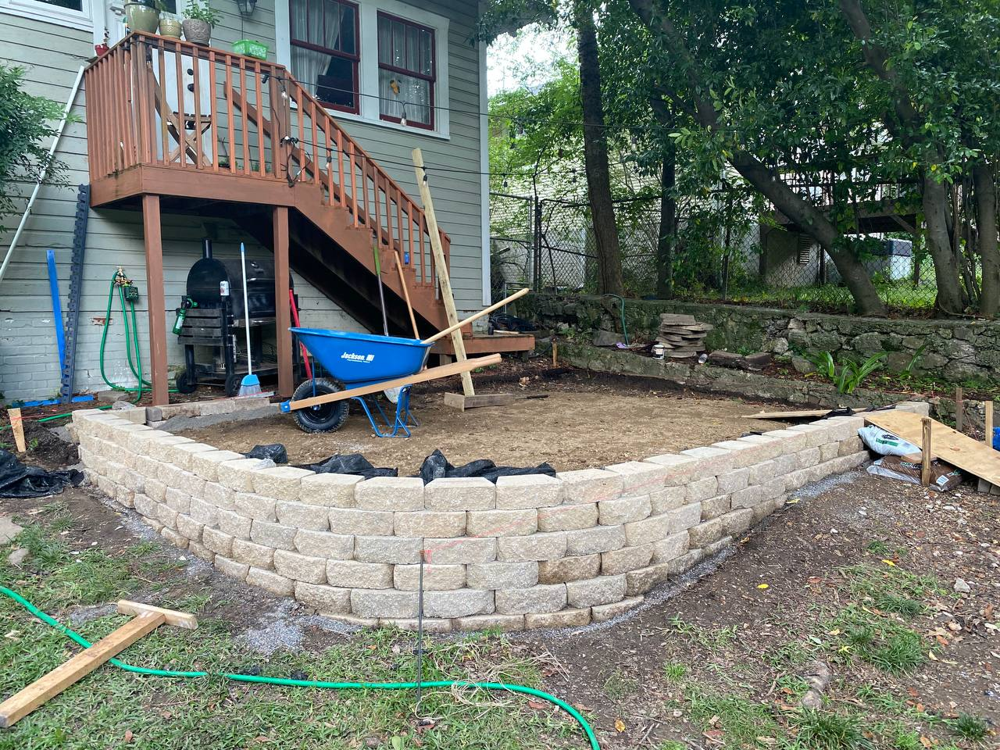
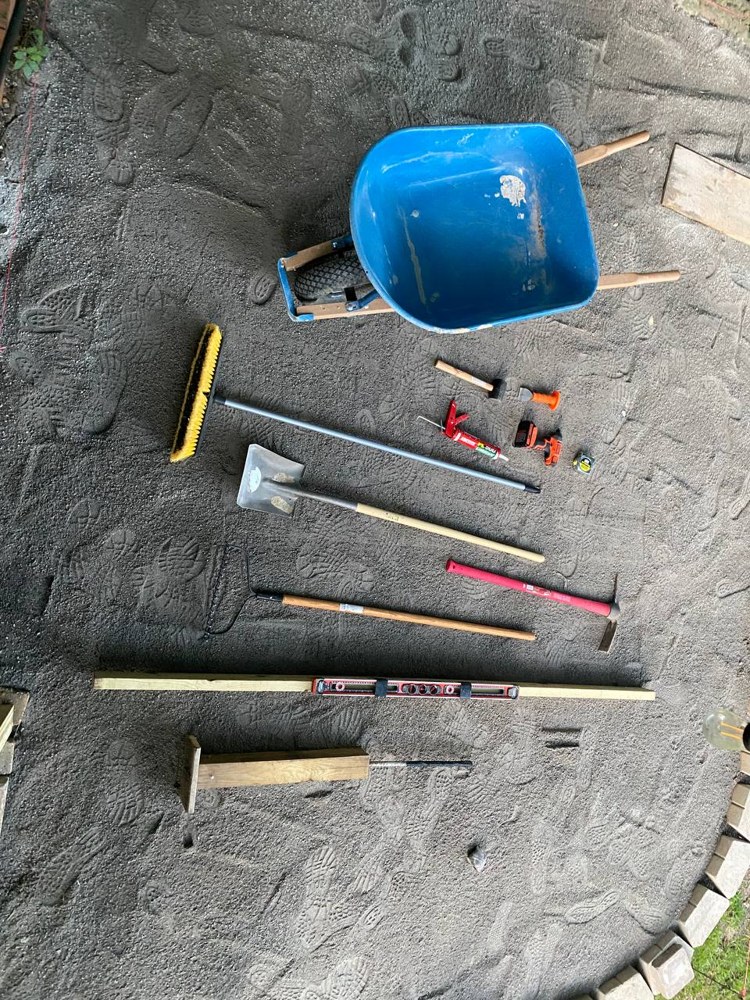

The Stone Paver Patio Project
In the summer of 2020 I built a multi-level stone paver patio from scratch. No contractor, no kit: some research, a rented plate compactor, and a lot of weekends.

The finished patio, now home to an increasingly large Monstera.
The site started as grass and a slope running toward the house. First I cleared the area and graded it so water would drain away from the foundation.

The starting point: site clearing and initial grading.
Next came the retaining wall, built from heavy masonry block to hold up the raised section. I backfilled it with crushed stone and built the base in layers, tamping each one so it wouldn't settle later.


This stage ran almost entirely on hand tools: a level, a plate compactor, a rubber mallet, and patience. I checked level constantly, because one paver set even slightly high throws off everything after it.

Mostly leveling and tamping gear.
It took most of a summer. The patio has held up since: still level, still draining the right way, and without a crack.